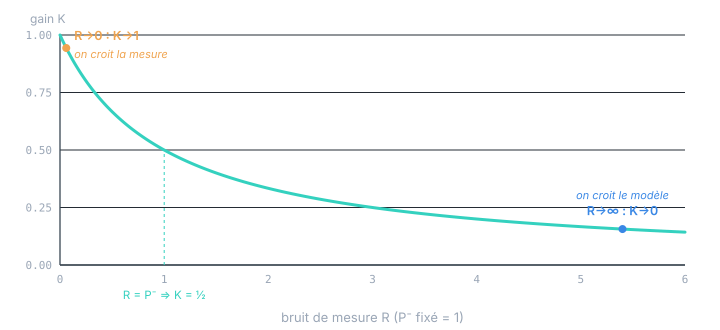

Chapitre 08
Gain, innovation et optimalité
Objectifs du chapitre
- Comprendre finement ce que fait le gain K et ses deux régimes limites.
- Voir l'innovation comme le vrai flux d'information du filtre, et son étonnante propriété : c'est un bruit blanc.
- Énoncer proprement l'optimalité (MMSE) et le principe d'orthogonalité.
- Observer le tout à l'œuvre : un filtre déroulé qui reconstruit une vitesse jamais mesurée.
1. Le gain, arbitre entre modèle et mesure
Tout le filtre tient dans l'arbitrage porté par K = P⁻·Hᵀ·S⁻¹. Pour le sentir, réduisons au cas scalaire (H = 1), où K = P⁻ / (P⁻ + R). Le gain est la part d'incertitude venant du modèle dans l'incertitude totale. Deux régimes extrêmes :
- Capteur très précis (R → 0) : K → 1. On saute vers la mesure, x ≈ z. Le modèle est presque ignoré.
- Capteur très bruité (R → ∞) : K → 0. On garde la prédiction, x ≈ x⁻. La mesure est presque ignorée.

Le point-clé : K n'est pas figé. Comme P⁻ change à chaque cycle (il gonfle à la prédiction, se resserre à la correction), le curseur se replace tout seul. Au démarrage, P⁻ est grand, K proche de 1 : le filtre se cale vite sur les premières mesures. Puis P⁻ diminue, K baisse, le filtre lisse davantage. Cet auto-réglage est ce qui distingue Kalman d'un filtre passe-bas à coefficient fixe.
En version matricielle, K arbitre direction par direction : il peut faire fortement confiance à la mesure selon un axe bien observé et la négliger selon un axe mal observé, tout cela dans le même pas. C'est pourquoi K est une matrice et non un scalaire — l'arbitrage n'est pas global mais géométrique.
2. L'innovation : le vrai carburant du filtre
L'innovation y = z − H·x⁻ mérite mieux qu'une ligne. C'est la seule quantité par laquelle la mesure agit sur l'état : la correction s'écrit x = x⁻ + K·y, rien d'autre que l'a priori plus un multiple de l'innovation. Si l'innovation est nulle (la mesure confirme exactement la prédiction), l'état ne bouge pas : la mesure n'apportait aucune information neuve. Tout l'apport d'un capteur se résume à sa surprise.
Voici la propriété profonde. Quand le filtre est bien réglé (bon modèle, bons Q, R), la suite des innovations y₁, y₂, y₃, … est un bruit blanc gaussien, centré, de covariance S :
Autrement dit : une fois que le filtre a extrait toute l'information, ce qui reste dans les innovations est du pur bruit, sans structure ni mémoire. C'est le test d'un bon filtre, et le fondement du diagnostic de cohérence (chapitre 10) : si les innovations sont corrélées dans le temps ou ont une moyenne non nulle, c'est qu'il restait de l'information à exploiter — le modèle ou les réglages sont mauvais.
Intuition de la blancheur : si deux innovations successives étaient corrélées, le filtre pourrait prédire une partie de yₖ₊₁ à partir de yₖ — et donc l'aurait déjà intégrée dans l'estimation. Un filtre optimal ne laisse rien de prévisible traîner dans ses innovations : il a tout absorbé. La blancheur de l'innovation est la signature observable de l'optimalité.
3. Optimalité : MMSE et orthogonalité
Précisons enfin en quel sens le filtre est « optimal ». Le critère est l'erreur quadratique moyenne (MMSE, minimum mean square error) : parmi tous les estimateurs possibles x̂ = g(z₁:ₖ), quel que soit g, celui qui minimise E[‖x − x̂‖²] est l'espérance conditionnelle E[x | z₁:ₖ]. Or, dans le cas linéaire-gaussien, cette espérance conditionnelle est exactement ce que calcule le filtre de Kalman. D'où :
Sous les hypothèses linéaires-gaussiennes, le filtre de Kalman produit l'estimation de plus petite erreur quadratique moyenne possible. Aucun estimateur — linéaire ou non, aussi astucieux soit-il — ne fait mieux. Et si l'on relâche la gaussianité (bruits quelconques mais de covariances connues), il reste le meilleur estimateur linéaire (c'est la dérivation BLUE du chapitre 7).
Une façon élégante de voir cette optimalité est le principe d'orthogonalité : l'erreur d'estimation optimale est orthogonale (décorrélée) à toute l'information utilisée.
Géométriquement, l'estimation est la projection de l'état vrai sur l'espace engendré par les mesures : le résidu est perpendiculaire à cet espace, donc on ne peut plus rien en extraire par combinaison linéaire des mesures. Si l'erreur avait une composante corrélée à une mesure, on pourrait encore réduire l'erreur — donc l'estimation ne serait pas optimale. L'innovation blanche du §2 est la traduction séquentielle de cette orthogonalité.
4. Le filtre à l'œuvre
Assemblons tout sur l'exemple canonique du chapitre 5 : suivi 1D, état [p, v], mesure de position seule. On simule une vérité terrain (dont la vitesse change en cours de route pour tester la poursuite), on la bruite pour fabriquer des mesures, et on déroule le filtre.
![Graphe de la position en fonction du cycle. Une courbe en tirets clairs représente la vérité terrain, dont la pente diminue au cycle 20 (changement de vraie vitesse, marqué d'une verticale). Des points ambre dispersés autour de la vérité sont les mesures bruitées. Une courbe verte épaisse, entourée d'une bande verte translucide ±1σ, est l'estimation filtrée : elle lisse les mesures, colle à la vérité, et rattrape le changement de vitesse après un court retard. La bande ±1σ est large au départ puis se resserre.](figures/fig-kalman-run.svg)
Deux choses remarquables sur cette figure. D'abord, l'estimé de vitesse (non tracé mais à l'œuvre dans la pente de la courbe verte) converge vers la vraie vitesse, alors qu'aucun capteur ne mesure la vitesse : le couplage position-vitesse dans P (créé par F à la prédiction, chapitre 6) permet à une mesure de position seule de la reconstruire. C'est le tour de force du filtre. Ensuite, la bande d'incertitude rétrécit puis se stabilise : le filtre atteint un régime permanent où P et K deviennent presque constants — précisément le sujet du chapitre 9.
Le petit retard au changement de vitesse (cycle 20) n'est pas un bug : c'est le prix d'un modèle qui « croit » à une vitesse constante. On peut le réduire en augmentant Q (le filtre se méfie plus du modèle, réagit plus vite) — mais alors il lisse moins et suit davantage le bruit. Ce compromis réactivité ↔ lissage est le cœur du réglage (chapitre 10). Il n'existe pas de réglage parfait, seulement un réglage adapté à ce qu'on attend du filtre.
Récapitulatif
- K arbitre entre modèle et mesure : K→1 si le capteur est fiable, K→0 s'il est bruité ; il se replace à chaque cycle car P⁻ évolue.
- L'innovation y = z − Hx⁻ est la seule information neuve ; la correction n'est que x⁻ + Ky.
- Filtre bien réglé ⇒ innovations = bruit blanc centré de covariance S. C'est la signature observable de l'optimalité (et le test du chapitre 10).
- Optimalité MMSE : le filtre calcule E[x|z₁:ₖ], l'estimateur de plus petite erreur quadratique moyenne ; sans gaussianité, il reste le meilleur estimateur linéaire.
- Orthogonalité : l'erreur optimale est décorrélée des mesures — une projection ; rien de linéairement exploitable ne subsiste.
- À l'œuvre : le filtre reconstruit une vitesse jamais mesurée (via le couplage dans P) et voit son incertitude se stabiliser en régime permanent (chapitre 9).